PHYS598500 · Week 5
Controlling a Single Qubit with Microwaves
Maskless lithography: Dolan bridge

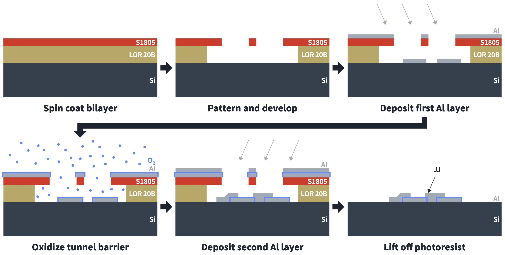

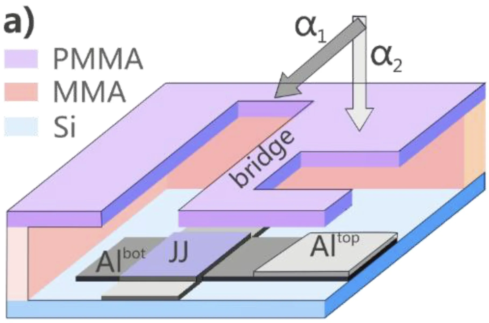
Process: Heidelberg Instruments · Inset: A. A. Pishchimova et al., Fig. 1(a), arXiv:2210.15293
Maskless lithography: Manhattan (Bridge-free)

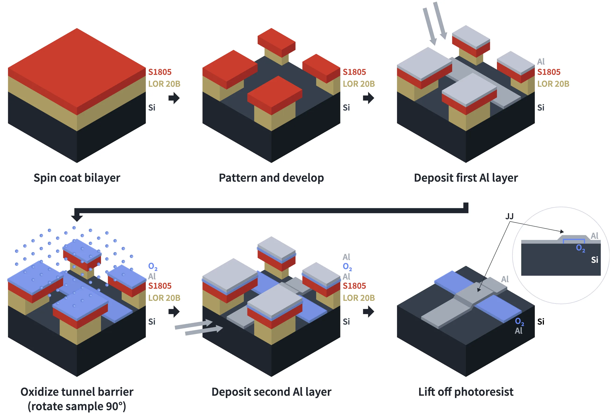
Multiangle shadow evaporation (Manhattan, Bridge-free)

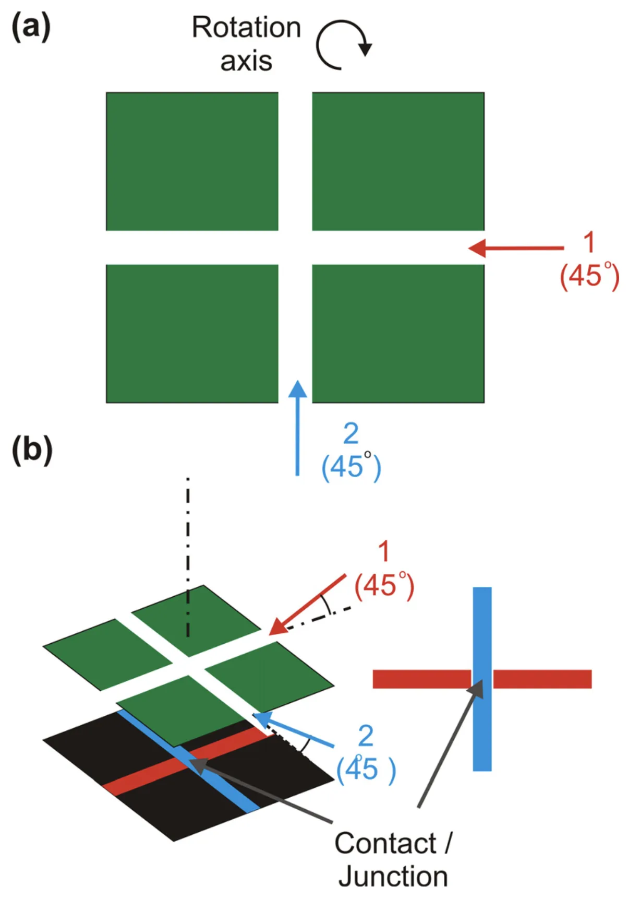
Fig. 2(a,b): nonsuspended mask.

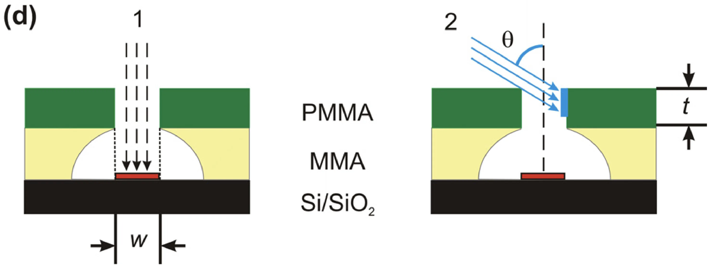
Fig. 1(d): top-resist thickness controls sidewall shadowing at oblique incidence.
The paper treats general metallic contacts; the deposited materials depend on the device.
Ref: 10.1116/1.4722982
Single-layer resist: shadow evaporation (Manhattan, Bridge-free)

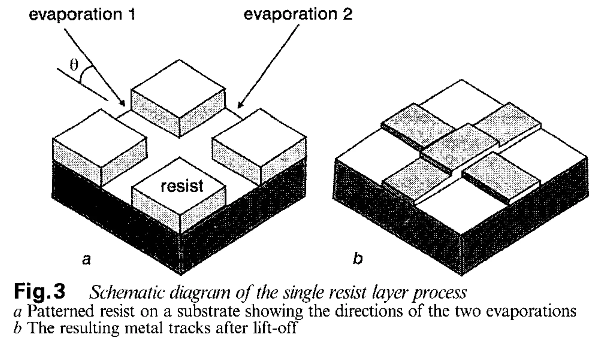
Scaffold-assisted window junction (Foundry-compatible)

Deposit 100 nm of Al. Pattern the base electrode. Etch the Al.
Deposit 200 nm of SiO₂. Use DUV lithography to define the windows. Dry-etch the SiO₂.

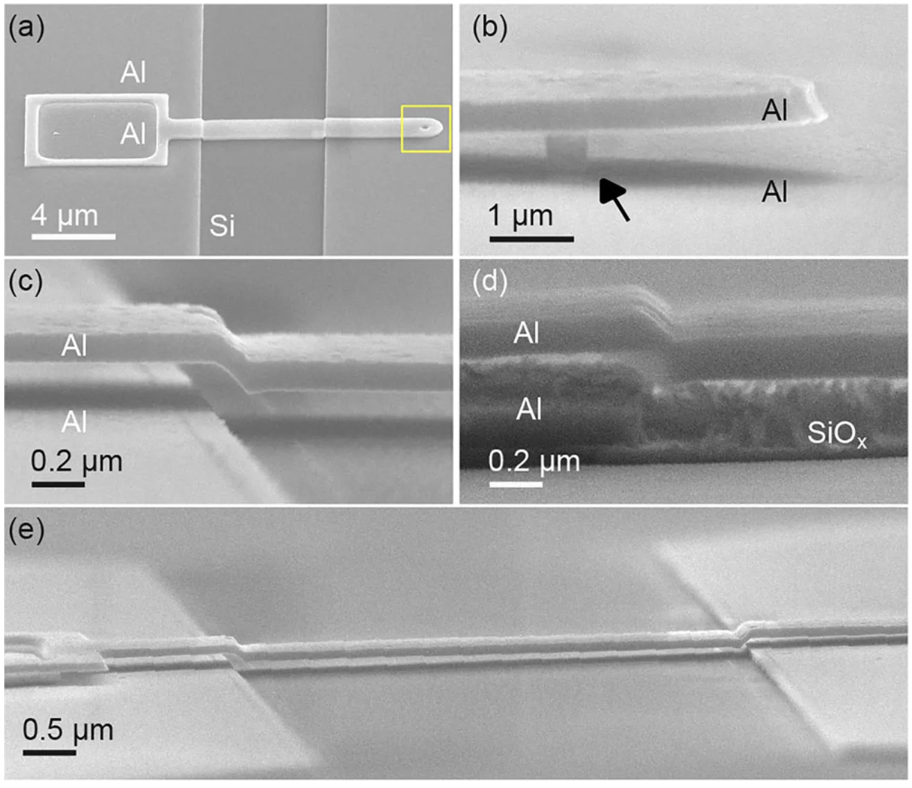
C.-T. Ke et al., npj Quantum Information 12, 98 (2026), Figs. 1 and 4. DOI
PHYS598500 · Week 5
Microwave control
The physical waveform, the full driven spectrum, then the qubit limit
A capacitively driven transmon
The drive in \(I\) and \(Q\)
Lecture illustration; carrier cycles reduced for visibility.
The microwave control chain

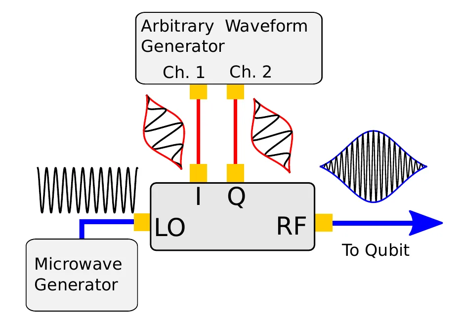
Gate command
↓
Pulse sequencer / FPGA → DAC / AWG
↓
I(t), Q(t) → IQ mixer + local oscillator
↓
Attenuation / filtering → drive line → transmon
Figure source: D. C. McKay et al., Phys. Rev. A 96, 022330 (2017), Fig. 1. DOI
Baseband envelope and RF carrier phase
\(I=A\cos\phi,\quad Q=A\sin\phi,\qquad V_{\rm RF}=I\cos\omega_dt+Q\sin\omega_dt\)
The transmon ladder
Write \(\mathcal H_0\) with \(a,a^\dagger\) (\(E_J\gg E_C\)) and keep the fourth-order term:
Level \(j\) sits at \(\omega_j=j\,\omega_{01}+\tfrac{\alpha}{2}\,j(j-1)\), with \(\omega_{01}\simeq\omega_p-\tfrac{E_C}{\hbar}\) and \(\alpha\simeq-\tfrac{E_C}{\hbar}\):

J. Koch et al., Phys. Rev. A 76, 042319 (2007) · Figure: J. M. Chávez-Garcia et al., Phys. Rev. Applied 18, 034057 (2022).
One matrix for the week
P. Krantz et al., Appl. Phys. Rev. 6, 021318 (2019).
Where the signals go

Circuit: T. E. Roth et al., arXiv:2106.11352. Lecture animation, ideal two-state evolution; carrier cycles reduced for visibility.
Frequency bands and their jobs

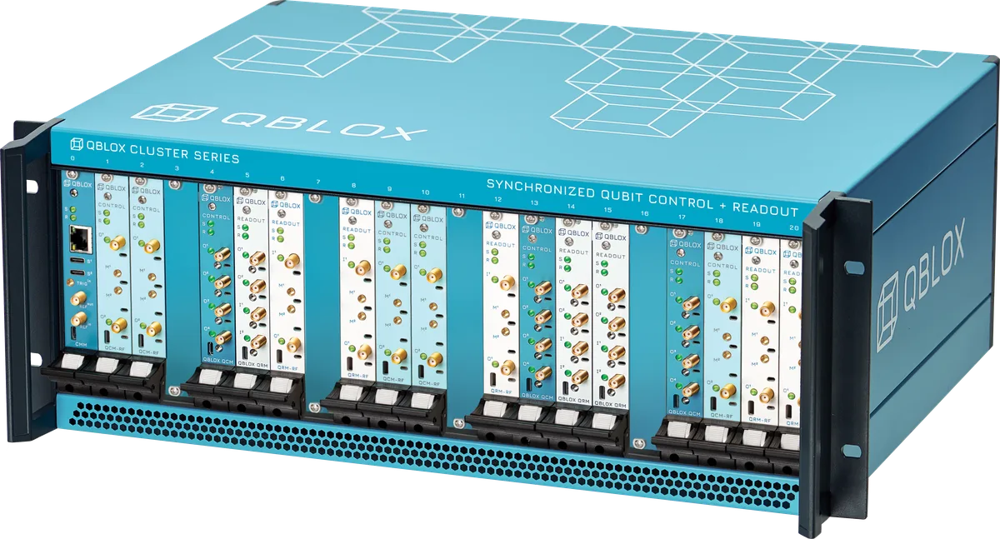

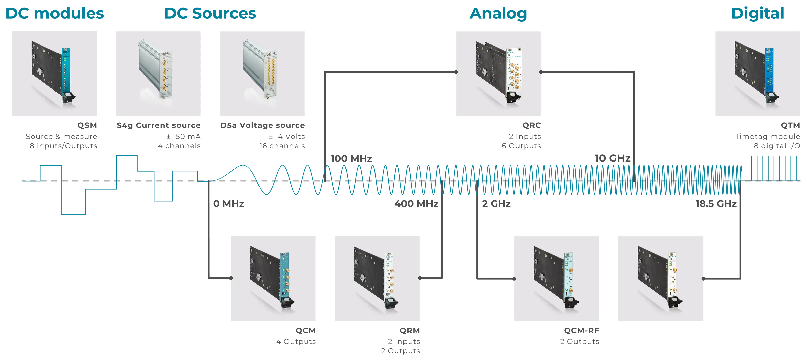
| Band | Job on a transmon |
|---|---|
| DC | Sets the flux bias. |
| 0–400 MHz | Makes fast flux pulses. |
| 2–18.5 GHz | Drives the qubit. Reads the resonator. |
| Digital | Sends triggers. |
Images: Qblox Cluster module overview and Cluster chassis, docs.qblox.com.
Virtual Z gates and Frame updates
Changing the phase of subsequent microwave pulses changes their axes in the rotating frame.
The controller tracks this frame change in software. A separate physical Z pulse is unnecessary.
Track a logical Z rotation by storing its angle in the frame.
For a logical \(Z_{\pi/2}\), shift the phase of each later physical pulse by \(-\pi/2\).
The final Z remains in the tracked frame. It does not change a measurement in the computational basis.
Virtual-Z theory: D. C. McKay et al., Phys. Rev. A 96, 022330 (2017), Sec. I. DOI
Physical Z and virtual Z on the Bloch sphere

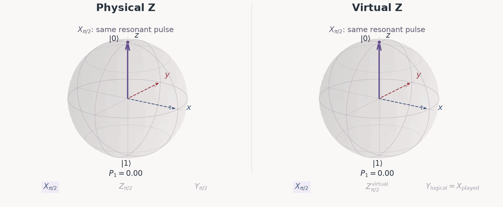
Lecture simulation. Fixed drive reference. Ideal two-state evolution. Python
Physical Z and virtual Z
\(X=R_x(\pi/2),\quad Y=R_y(\pi/2),\qquad R_\phi(\pi/2)\,R_z(\theta)=R_z(\theta)\,R_{\phi-\theta}(\pi/2)\)
PHYS598500 · Week 5
Chevron
The detuning chevron
Frequency mismatch changes both the oscillation frequency and its maximum population transfer.
The detuning chevron (1/4): 0 MHz

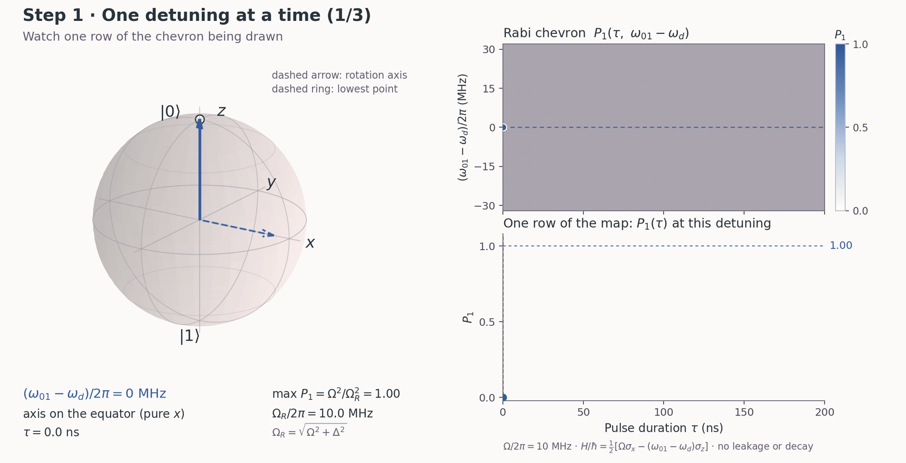
Exact rotating-frame evolution, Ω/2π = 10 MHz · two-state approximation; no leakage or decay.
The detuning chevron (2/4): 10 MHz

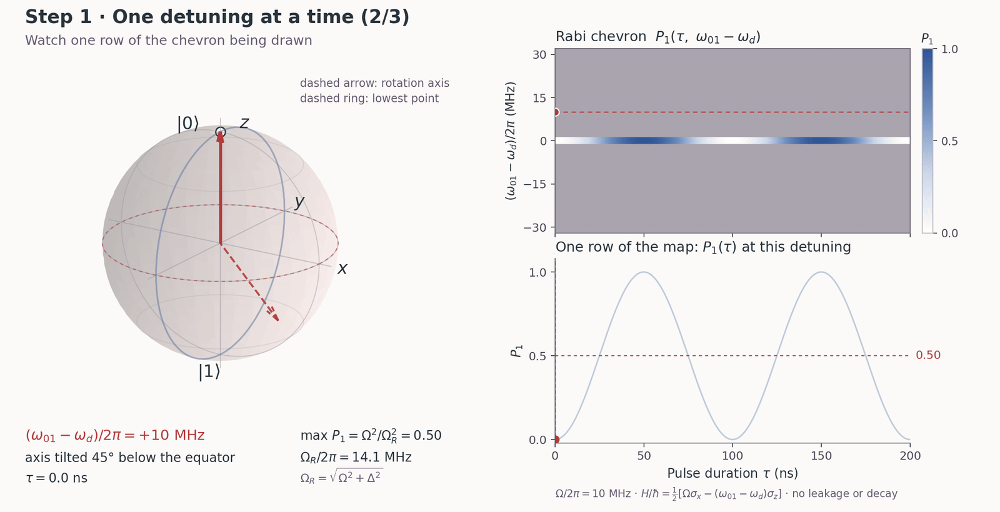
Exact rotating-frame evolution, Ω/2π = 10 MHz · two-state approximation; no leakage or decay.
The detuning chevron (3/4): 20 MHz

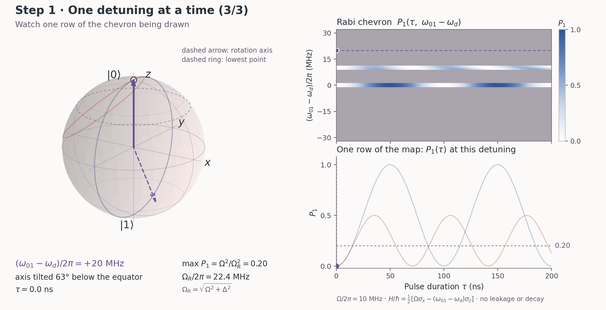
Exact rotating-frame evolution, Ω/2π = 10 MHz · two-state approximation; no leakage or decay.
The detuning chevron (4/4): sweep

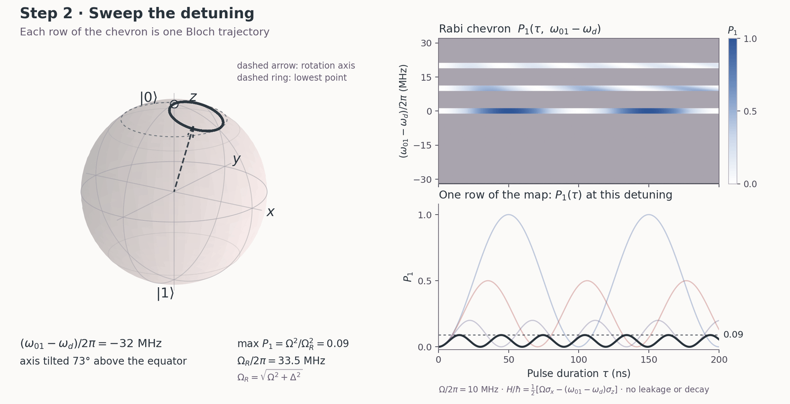
Exact rotating-frame evolution, Ω/2π = 10 MHz · two-state approximation; no leakage or decay.
The detuning chevron, animated

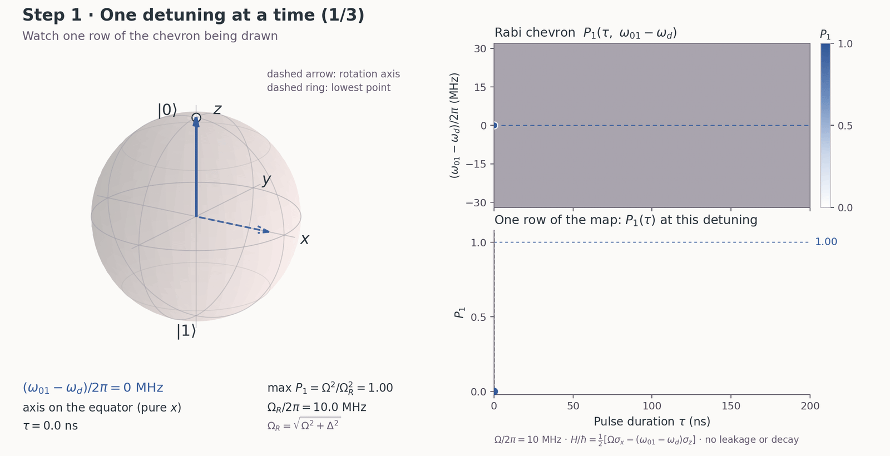
Exact rotating-frame evolution, Ω/2π = 10 MHz · two-state approximation; no leakage or decay.
Rabi chevron: gate duration, animated

Lecture simulation. Each point: prepare |0〉, drive for τ, measure; repeat to estimate P₁. Ω/2π = 10 MHz.
Rabi gate duration (1/4): 0 MHz

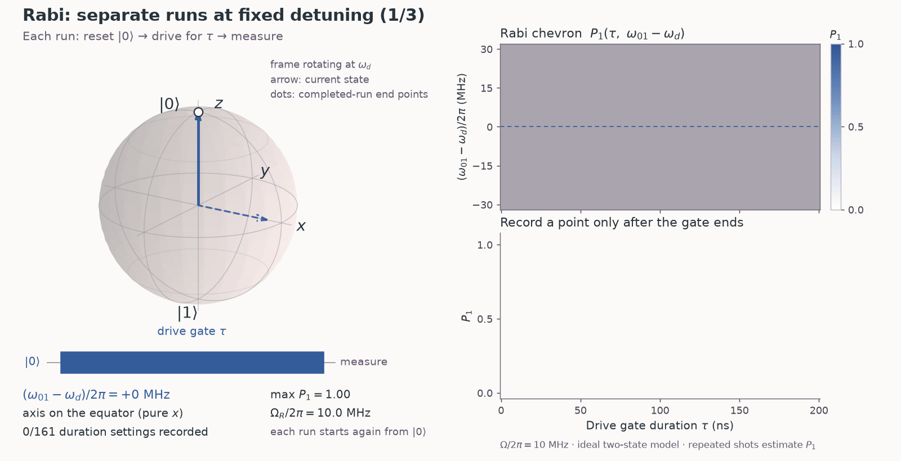
Lecture simulation. Each point: prepare |0〉, drive for τ, measure; repeat to estimate P₁. Ω/2π = 10 MHz.
Rabi gate duration (2/4): 10 MHz

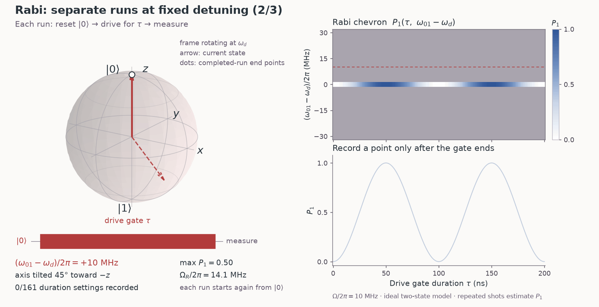
Lecture simulation. Each point: prepare |0〉, drive for τ, measure; repeat to estimate P₁. Ω/2π = 10 MHz.
Rabi gate duration (3/4): 20 MHz

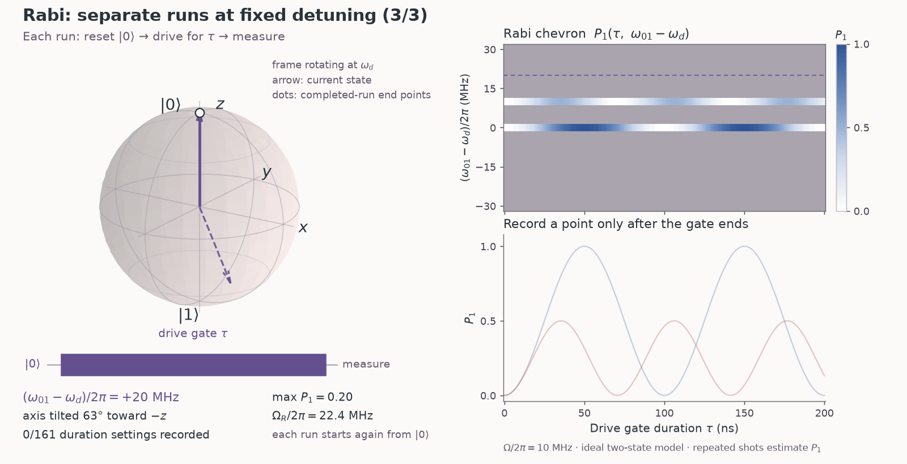
Lecture simulation. Each point: prepare |0〉, drive for τ, measure; repeat to estimate P₁. Ω/2π = 10 MHz.
Rabi gate duration (4/4): sweep

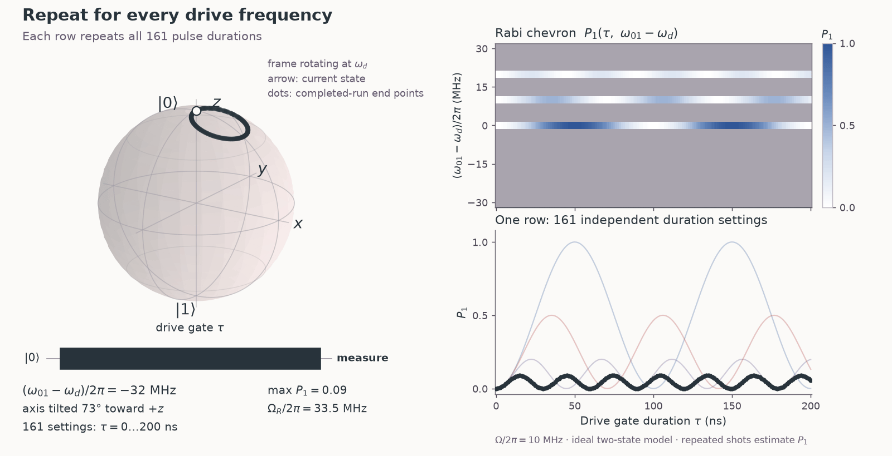
Lecture simulation. Each point: prepare |0〉, drive for τ, measure; repeat to estimate P₁. Ω/2π = 10 MHz.
Measure the detuning with Ramsey fringes

P. Krantz et al., Appl. Phys. Rev. 6, 021318 (2019).
The Ramsey chevron (1/4): 0 MHz

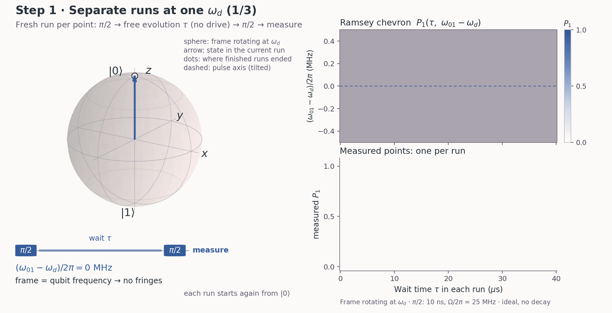
Each point is a separate π/2 – τ – π/2 run, with no drive during τ. The 10 ns π/2 pulses are sent at ωd, so their axis tilts by arctan[(ω01 − ωd)/Ω].
The Ramsey chevron (2/4): 0.1 MHz

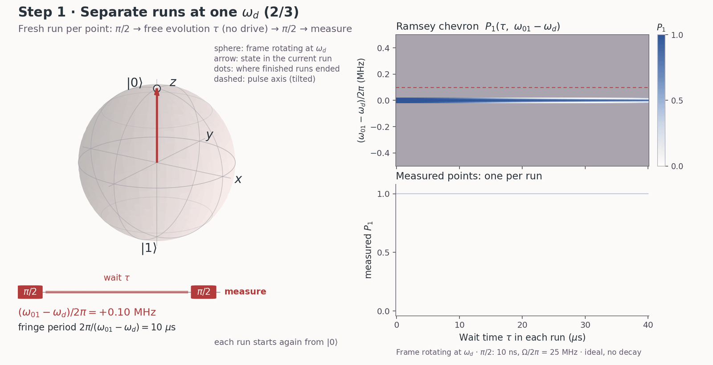
Each point is a separate π/2 – τ – π/2 run, with no drive during τ. The 10 ns π/2 pulses are sent at ωd, so their axis tilts by arctan[(ω01 − ωd)/Ω].
The Ramsey chevron (3/4): 0.25 MHz

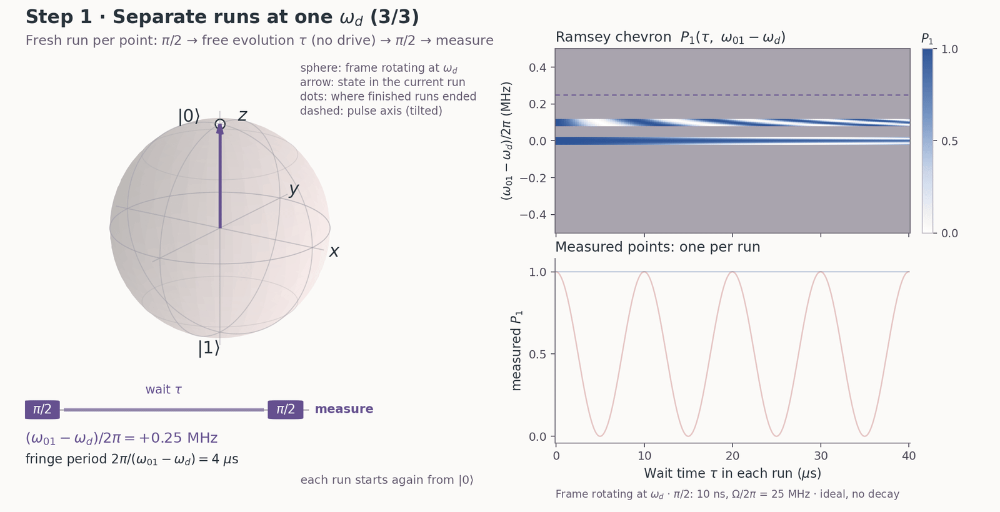
Each point is a separate π/2 – τ – π/2 run, with no drive during τ. The 10 ns π/2 pulses are sent at ωd, so their axis tilts by arctan[(ω01 − ωd)/Ω].
The Ramsey chevron (4/4): sweep

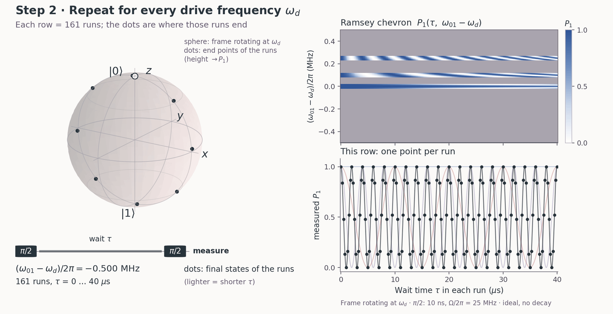
Each point is a separate π/2 – τ – π/2 run, with no drive during τ. The 10 ns π/2 pulses are sent at ωd, so their axis tilts by arctan[(ω01 − ωd)/Ω].
The Ramsey chevron, animated

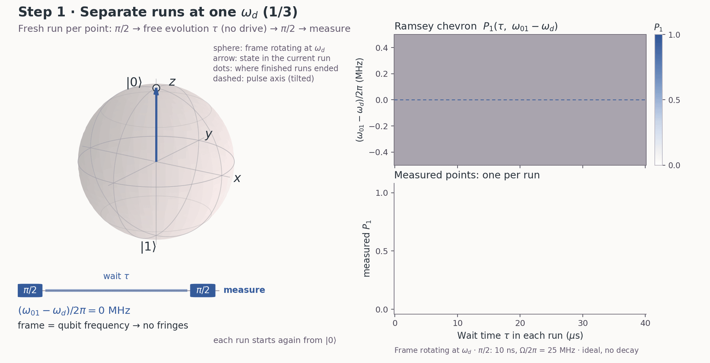
Each point is a separate π/2 – τ – π/2 run, with no drive during τ. The 10 ns π/2 pulses are sent at ωd, so their axis tilts by arctan[(ω01 − ωd)/Ω].
PHYS598500 · Week 5
Pulse shaping
Population transfer beyond the two computational states
Why does DRAG use a derivative?
I and Q drive the carrier 90° apart. DRAG sets Q from the slope of I:
Fourier transform at an offset \(\omega\) from \(\omega_d=\omega_{01}\). With \(I(0)=I(T)=0\), the slope becomes a factor \(-i\omega\). For \(S=I+iQ\) :
Interactive: cos² π pulse, T = 20 ns, carrier \(\tfrac{\omega_d}{2\pi}=5\) GHz, \(\tfrac{\alpha}{2\pi}=-223\) MHz. Derivative spectrum: F. Motzoi and F. K. Wilhelm, Phys. Rev. A 88, 062318 (2013), Sec. III.
Gaussian or \(\cos^2\) envelope?
Two π pulses with the same area, \(T=20\) ns:
Lifted Gaussian: subtract the end value, so \(I(0)=I(T)=0\) (as in Qiskit Pulse). \(\cos^2\) also starts and ends at 0, with zero slope too.
π pulses, T = 20 ns (lifted Gaussian, σ = T/4), carrier \(\tfrac{\omega_d}{2\pi}=5\) GHz, \(\tfrac{\alpha}{2\pi}=-223\) MHz.
Why a plain π pulse has a \(\sigma_z\) error: AC Stark Effect
Plain π pulse (\(Q=0\), \(\Delta=0\)). The three amplitudes as one vector:
Row 3 is the differential equation for \(c_2\):
Multiply by \(e^{i\alpha t}\):
Integrate from 0, with \(c_2(0)=0\). This is exact:
Integrate by parts (\(I(0)=0\)). \(c_2\) has two parts:
The first part only follows \(c_1\): it is gone when \(I=0\), but it changes row 2 (next page). The second part is driven by \(\tfrac{d}{dt}(Ic_1)\); it is what stays in \(|2\rangle\) after the pulse.
J. M. Gambetta et al., Phys. Rev. A 83, 012308 (2011) · F. Motzoi et al., Phys. Rev. Lett. 103, 110501 (2009).
Why a plain π pulse has a \(\sigma_z\) error: AC Stark Effect
Put the first part of \(c_2\) into row 2:
While the pulse is on, \(|1\rangle\) moves by \(-\tfrac{I^2}{2\alpha}\), which is positive since \(\alpha<0\). That is a \(\sigma_z\) term: the phase error of a plain π pulse.
Rows 1–2 of the 3×3, with \(\sigma_z=|0\rangle\langle0|-|1\rangle\langle1|\):

Lecture simulation: cos² π pulse, T = 20 ns, \(\tfrac{\alpha}{2\pi}=-223\) MHz, rows 1–2 of the 3×3. J. M. Gambetta et al., Phys. Rev. A 83, 012308 (2011). Python
DRAG and AC Stark Effect
DRAG adds the \(y\) quadrature \(Q=-\lambda\tfrac{\dot I}{\alpha}\) (still \(\Delta=0\)). Row 3 of the 3×3 becomes

J. M. Gambetta et al., Phys. Rev. A 83, 012308 (2011) · F. Motzoi et al., Phys. Rev. Lett. 103, 110501 (2009).
\(\Delta\) moves it back: the DRAG 3×3
A carrier offset \(\Delta=\omega_{01}-\omega_d\) adds \(\Delta\) on \(|1\rangle\) and \(2\Delta\) on \(|2\rangle\). For the gate (\(I=0\) at the start and the end), the pulse acts as this 3×3:
Blue: the phase (Q also moves the blue entry). Orange, integrated over the pulse, is the \((1-\lambda)\) of DRAG: Q cancels the leakage.
\(\lambda=\tfrac12\): blue is 0, orange is half. \(\lambda=1\): orange is 0, but blue is \(+\tfrac{I^2}{2\alpha}\). \(\lambda=1\) and \(\Delta(t)=-\tfrac{I^2}{2\alpha}\): both are 0.
J. M. Gambetta et al., Phys. Rev. A 83, 012308 (2011) · F. Motzoi et al., Phys. Rev. Lett. 103, 110501 (2009).
DRAG weight: one half or one?

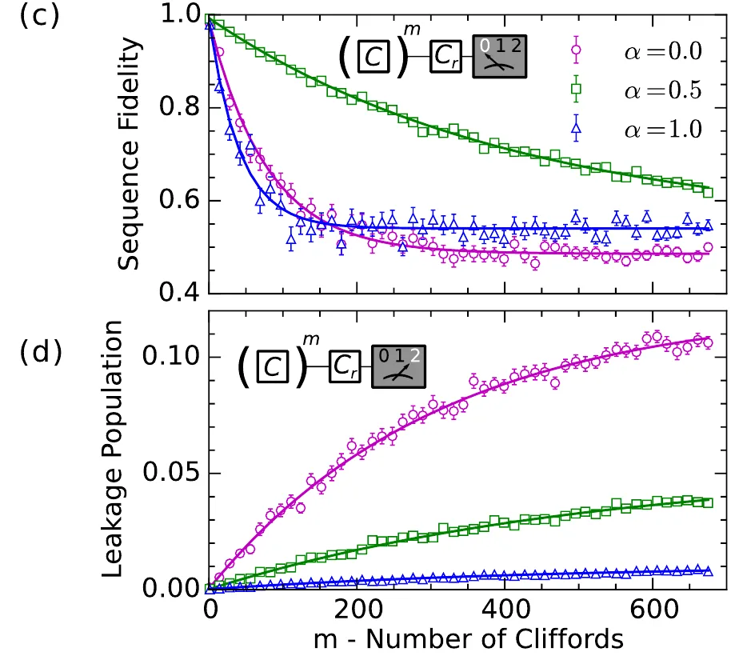
The figure's \(\alpha\) is our \(\lambda\). The two plots measure different errors.

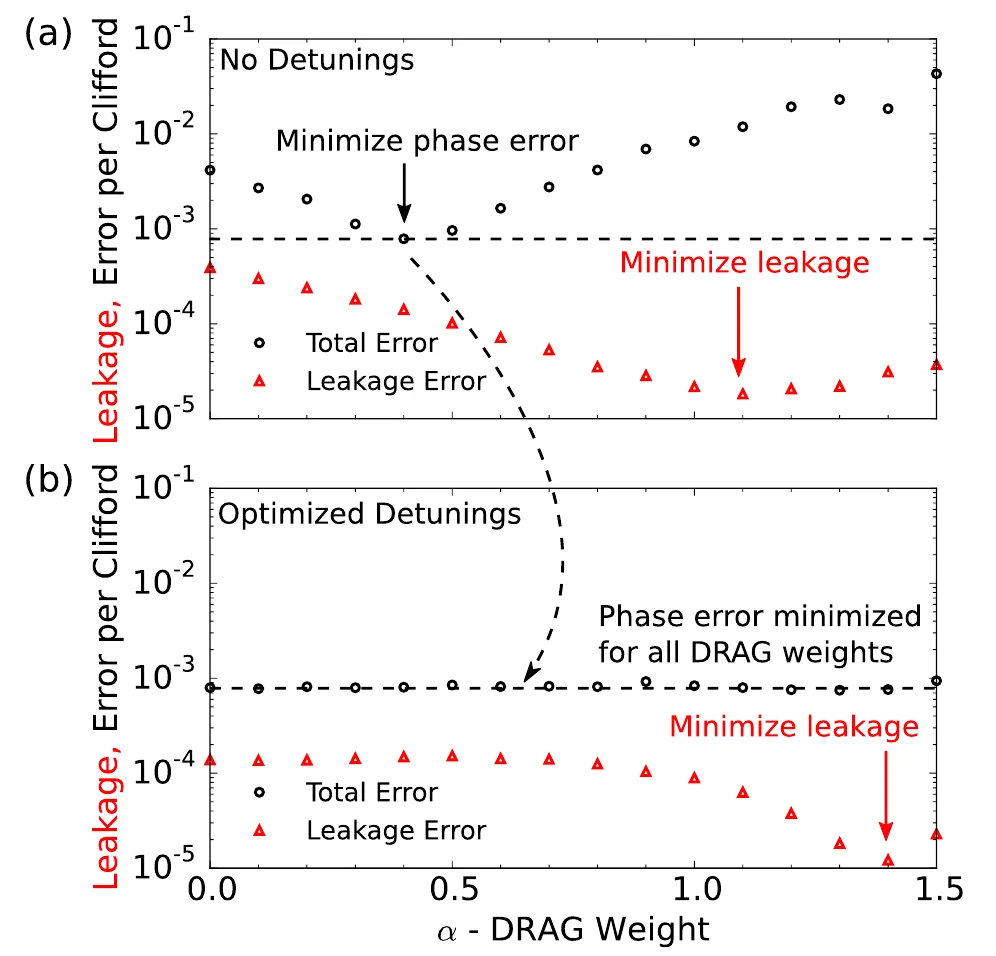
Top: no detuning. Bottom: calibrated detuning. Figure \(\alpha=\lambda\).
Fixed detuning and data: Z. Chen et al., Phys. Rev. Lett. 116, 020501 (2016), Fig. 3. DOI · Dynamic DRAG: J. M. Gambetta et al., Phys. Rev. A 83, 012308 (2011), Eq. (54). DOI
PHYS598500 · Week 5